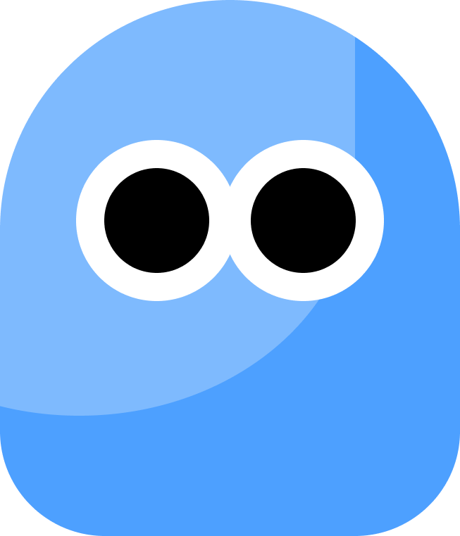

Design Projects
I focus on branding, UI/UX, and social media design.

Updating...

Updating...

A kinetic poster experiment combining typographic rhythm and motion.

Built using HTML, CSS, and vanilla JS — focusing on microinteractions and transitions.